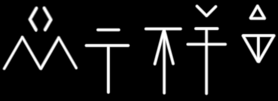
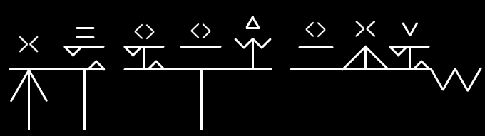

Last modified:
--/--/----
This guide details the dialect most commonly spoken among kholo of the Mwangi Expanse, as opposed to those dialects spoken in Katapesh or other areas.
Commonly referred to as High Kholo, reflecting the Mwangi gnolls' greater (by comparison) penchant for civilized culture and trade.
Natively, it is simply called Kholo, or Kholoyyisii ("Kholo-speech"). Notes are not kept on other dialects of Kholo, except as they directly relate to this one.
Remember: Kholo are not humans, and do not possess human mouth anatomy. This document takes a little "Okay so these guys have funny dog mouths" to follow. It's worth it, this is fun. I promise.
High Kholo uses trademarks and/or copyrights owned by Paizo Inc., used under Paizo's Community Use Policy (paizo.com/licenses/communityuse). I am expressly prohibited from charging you to use or access this content. High Kholo is not published, endorsed, or specifically approved by Paizo. For more information about Paizo Inc. and Paizo products, visit paizo.com.
| Bilabial | Bidental | Dental | Interdental | Palatal | Velar | Glottal | |
|---|---|---|---|---|---|---|---|
| Plosive (stop) | p b | t d | kh gh | k g | (') | ||
| Nasal | m | nn | n | ||||
| Tap | r | ||||||
| Fricative | f v | nh | s z | sh zh | hh | ||
| Approximant | w | (jh) | l | j | |||
| Latrant (bark) | y | yy | yh | ||||
| Front | Central | Back | |||
|---|---|---|---|---|---|
| Close | i (ii) | u (uu) | |||
| e | ɪ (i) | ||||
| Mid | o | ||||
| ʌ (u) | |||||
| Open | ä (a) |
High Kholo, being a language of hyenafolk, is designed at its core with sounds pronounceable by the muzzle of a hyena. Its phonemes can all be approximated by a human, and many are identical to human sounds.
In the consonant inventory above, each letter in a grid cell corresponds roughly to a human phoneme.
Not all are direct translations, however. Follow below for a guide on the unique sounds exclusive to Kholo, and information on how to best approximate those sounds as a human.
Made with the jaws clenched and the teeth bared.
Made with the tongue pressed adjacent to the fangs. In humans this position would be equivalent to behind the incisors but ahead of the canines, if such a space existed.
These sounds all roughly correspond to ordinary human consonants, and no special notes are needed for them. The one exception is the interdental latrant, which is covered below.
These are sounds made using the throat as the primary articulator, rather than the tongue or teeth. There are two, the plosive and the fricative; both of which directly correspond to human sounds.
The glottal fricative is the classic 'h' sound. It is doubled in Kholo writing to help distinguish it from numerous other sounds that use 'h' as a modifier instead of a letter — 'nh,' 'sh,' among others.
The glottal plosive, written with an apostrophe ('), indicates that the speaker should briefly interrupt their flow of air before resuming it. "Ah-ah-ah!" is a common human saying that uses this sound.
From an older Common word meaning 'barking,' latrant consonants are made with the tongue starting slack and rapidly accelerating towards the target position. These are the language's famous yips and barks that outsiders associate with the hyenafolk, and arguably the hardest for outsiders to pronounce.
There are three distinct latrant consonants in High Kholo:
Kholo contains seven core vowel sounds, notably fewer than Common. It also contains fewer diphthongs (such as the 'oy' or 'aye' sounds in English), a product of its speakers who readily prefer articulated consonants. The diphthongs that Kholo does contain are often written with a vowel-consonant group, such as 'oj,' rather than as two vowels.
These were derived from a set of hieroglyphs representing the rough position of a kholo's mouth and teeth when making the related sounds.
| P | T | F | K | Kh | S | Sh |
|---|---|---|---|---|---|---|
| B | D | V | G | Gh | Z | Zh |
| (') | J | N | Y | L | M | R |
|---|---|---|---|---|---|---|
 |
 |
|||||
| Hh | Jh | Nh | Yh | |||
 |
||||||
| W | Nn | Yy | ||||
Vowels, meanwhile, were derived from pictograms of animals that make similar noises.
Vowels are written as diacritic (small) marks above the consonant that came before them. If a vowel appears at the start of a word, or preceded by another vowel, it is written full-size on its own like a consonant.
| A Crow |
E Fox |
I Pig |
Ii Rat |
O Monkey |
U Dragon |
Uu Ox |
|---|---|---|---|---|---|---|
| Comma | Period (full stop) | Exclamation | Question | Quotation |
|---|---|---|---|---|
Kholo is written in one of two modes: The normal style, with each letter separate; and the "semi-cursive" style, where each letter is horizontally connected to the next.
The normal style is used in printing, and the semi-cursive style is more common in handwriting (making it by far more common in general). Semi-cursive is more socially formal than normal style; the latter tends to appear more childish.
In semi-cursive style, vowels written at the start of a word (see above) are not connected.
| Bansil "Best friend" |
| Fenkhpiira "Witchcraft" |
|  |
| Kholo |
| Aljan zetik "Champion" |
| Khoshuu seneta mejosiik "Prince of the summer court" |
|  |
Kholo generally follows a subject-object-verb sentence structure: "Timmy the ball kicks".
The language is remarkably flexible, however. In most settings, the only strict requirement is that the object follow the subject.
Verb-subject-object ("Kicks Timmy the ball") is a common format in flowery, poetic systems; but tends to be seen as archaic or eccentric in speech.
In more casual writing or conversation, subject-verb-object ("Timmy kicks the ball," as in Common) is seen as more formal than the norm, and this is usually sufficient.
Adjectives follow the noun they modify, unless compounded or used as prefixes. There is no strict requirement for which form to use, though the prefix form is discouraged if the noun is already particularly long. (What counts as "particularly long" is up to personal taste.)
Kholo declines nouns and verbs according to a fusional suffix system. These suffixes indicate tense, the number of both the subject and object of a sentence, as well as the level of formality.
As the name implies, in most cases only the noun declines for number and formality; its adjectives are left alone.
The same word, if used more than once, can drop its nominal suffix following the first usage; unless the number or quality changes.
| Informal | Formal | ||
|---|---|---|---|
| Non-Kholo1 | Kholo2 | ||
| Singular | unmodified | -(w)im | |
| Plural | -(a)kh | -hha | -(a)ma |
| Myriad | -(a)ka | -(w)el | |
Kholo does not natively distinguish a future tense. Indicating an action yet to be taken is done via context. When it must be made explicit, the closest equivalent is to prepend the word "ta-" ("Time") to the related verb as a prefix, though native speakers find this clunky.
| Informal | Formal | ||
|---|---|---|---|
| Past | -(j)a | -to | |
| Present | Simple | -(j)o | |
| Continuous | unmodified | -(w)ej | |
The aspirational mood generalizes showing a desire, a want, a need, or a wish. In the simplest case, it takes the form of a standard "I want" statement; but Kholo is unique in having a formal system for the nuance of different levels of a desire, and the target of that desire.
Kholo differentiates wants and needs based on physical compulsions as much as emotional attachments. Important also is whether or not the desire is achievable in the first place. People often wish for things that they know they can never have, and kholo are no different.
Desires are thus given using the four aspirations, groups of related interfixes.
| Interfix | Example (Kholo) | Example (Common) | |||
|---|---|---|---|---|---|
| First aspiration | Need | Something without which the speaker will die or be incapacitated. | -t- | Sikht! | I need food! |
| Addiction | A compulsion. Something without which the speaker will wish for death and mean it. | -et- | Nhiet! | I need blood! | |
| Second aspiration | Craving | A psychological urge. Something the speaker has a tolerance for, and without which they will suffer great discomfort. | -wo- | Awoawo! | I crave gold! |
| Obsession | An emotional fixation. Something without which the speaker cannot control their feelings or concentrate. | -wuu- | Firitwuu vii'ba! | I crave my lover's touch! | |
| Third aspiration | Wish | An action the speaker can take or a state of being that they can achieve, outside of which they will not suffer. | -hhon- | Retsahhon! | I wish to be tall! |
| Want | A physical object which the speaker can obtain, without which the speaker will not suffer. | -hhuu- | Nhiihhuu zua! | I want a new sword! | |
| Fourth aspiration | Dream | Something the speaker cannot achieve under any circumstances. | -sre- | Souukhsre Zuatoa! | I dream of burning Osirion! |
| Hope | Something which the speaker can be given, or be lucky enough to receive; but which they cannot gain through their own actions. | -swa- | Khomosiik a'fiisetswa! | I hope winter isn't too cold! | |
| Longing | Something to which the speaker has a personal attachment, that they cannot currently access. | -sel- | Tuuselba rii! | I want to go home! | |
The conditional mood shows a potential or hypothetical action being taken, as in uses of the Common "if" or "would".
To indicate an action reliant on another (as in Common "if"), Kholo constructs a present-tense sentence, followed by the conditional action:
| Kholo | Common (literal) | Common (proper) |
|---|---|---|
| "Hhama'ba nnuu relaz khorahhii ba'elma." | "My father has death, and despair I feel." | "If my father dies, then I will feel despair." |
To indicate a hypothetical action (as in Common "would"), Kholo relies on making the action statement and then rejecting it:
| Kholo | Common (literal) | Common (proper) |
|---|---|---|
| "Ba owja'nha khlita, uubasja." | "I break your paw, but I do not." | "I would break your paw." |
Note the use of "uubasja," a contraction of "u ba se'a," meaning "but I do not".
The genitive case indicates ownership, possession, or association. In Common, this case is shown with the suffix 's, as in "Timmy's ball," or with the particle 'of,' as in "the Ides of March."
Kholo follows a principle of attribution, whereby the owner or possessor is treated as an adjective of the owned noun:
| Kholo | Common |
|---|---|
| "Yyuumi Yyii'ta" | "Thorn's prey" |
| "Shava'nha" | "Your heart" |
| "Aljanik awoa" | "The god of gold" |
The imperative mood indicates an instruction or directive from the speaker to the listener. Common shows this case by constructing a present-tense, second-person sentence ("You take a left at this stop sign") and omitting the subject pronoun ("Take a left at this stop sign").
Kholo imperatives follow a similar structure: The pronoun is omitted, and the verb is left unmodified if informal, or made present-tense if formal.
The imperative mood differs from the mandatory mood in that an imperative is a request or otherwise informational, whereas a mandate is a direct command or order.
| Kholo | Common |
|---|---|
| "Nno alkhit'ba." | "Write my legend." |
| "Hhja ber!" | "Sing for me!" |
| "Vrito hhja'ba nhaj'er." | "Allow me to sing for you." |
Corresponding roughly to the Common 'must,' the mandatory mood is a more specific version of the imperative; it shows a requirement for the listener to perform a command or directive.
In Common this mood is extremely simple to the point of barely differing from the imperative in terms of grammar. In Kholo, however, distinct grammatical rules and levels of formality are used to avoid giving offense through commanding another member of the pack.
The mandatory mood follows a vocabulary structure like that of the imperative. However, unlike other moods, a mandate is not merely a set of vocabulary and declension rules, but a full set of behavioral observations that sentences must adhere to.
The rules of the mandatory mood are strictly observed; in the harshest of packs, to deviate is to instantly invite exile upon oneself, a fate often considered worse than death.
| Listener's Rank | ||||||
|---|---|---|---|---|---|---|
| Very high | High | Equal | Low | Very low | ||
| Listener's Race | Kholo | SVO1 word order Formal suffixes Bow head at all times |
No set word order Formal suffixes Bow head if supplicating |
No set word order Informal suffixes Do not bow head |
SOV2 word order Informal suffixes Raise chin |
|
| Non-kholo3 | No set word order Informal suffixes Bow head if threatened |
No set word order Non-kholo suffixes Do not bow head |
SOV word order Non-kholo suffixes Raise chin |
|||
The potential case corresponds to the Common verb phrase "to be able" and its conjugations, such as "I can" and "I could".
Among the grammatical cases shown so far, the potential is by far the simplest: Attach the suffix -wa to the relevant pronoun, and decline the verb (if the sentence has one) as normal.
To negate the potential, as in "I could not" or "He cannot," apply the -'a suffix in addition.
| Kholo | Common (literal) | Common (proper) |
|---|---|---|
| "Yhiiwa ba'nii." | "He-can me-kill." | "He can/could kill me." |
| "Bawa yhii niija." | "I-can him killed." | "I could have killed him." |
| "Bawa'a!" | "I-can-not!" | "I can't!" |
| "Khewa'a!" | "This-can-not!" | "This can't be!" |
A set of grammar rules exists for when to prevent accidental doubling of consonant and vowel sounds in Kholo, especially when applying suffixes.
When amended with suffixes for tense, number and formality: If a word already ends in the major consonant sound of the suffix, that sound should be removed before the suffix is applied.
| Kholo | Common |
|---|---|
| Inkh | Knee |
| Inkhakh -> Inakh | Knees |
The rule is generally applied for very similar consonant sounds on a case-by-case basis. Non-native speakers may or may not struggle with deciding what counts as "similar," but aspirated consonants are the easiest to figure out.
| Kholo | Common |
|---|---|
| Inkh | Knee |
| Inkhaka -> Inaka | Knees (many) |
| Kholo | Common |
|---|---|
| Slihhe | Scale |
| Slihhehha -> Slihha | Scales (many) |
There are rare instances in which a root word ends with a cluster identical to a suffix. These are often, though not always, words which incorporate some level of inherent formality; such as alim (queen). In these cases, the suffix is omitted entirely rather than altered or doubled.
| Kholo | Common |
|---|---|
| Alim | Queen |
| Alimim'ba —> Alim'ba | My queen |
| Kholo | Common |
|---|---|
| Tuunorja | Shadow |
| Tuunorjaja -> Tuunorja | Shadowed |
Kholo speech tends to sonorize (i.e. morph from voiceless to voiced) consonants which occur at the beginning of a word preceded by an ending voiceless consonant.
This change is formalized to the point that it is frequently glossed in writing, but not consistently.
Formal texts will usually gloss sonorization in dialogue while preserving the original spelling in narration and other contexts. Highly formalized texts, such as ancestral codices or missives between cultures, are the most likely to gloss sonorization in all contexts.
Informal texts, meanwhile, tend to ignore sonorized initial consonants entirely, using only the voiceless original spelling. In other words, for most Kholo, sonorization is a purely vocal phenomenon; its display in casual writing is a giveaway that the writer is either a foreigner or an egghead.
| Kholo | Common |
|---|---|
| Tashikh suuja'ba -> Tashikh zuuja'ba | Before I came |
| Sazen'ba eget sosteja! -> Sazen'ba eget zosteja! | My secret wealth is found! |
| Ot'ap, peshika mejo. -> Ot'ap, beshika mejo. | From the dirt, many green vegetables. |
| 1st | 2nd (informal) | 2nd (formal) | 3rd | |
|---|---|---|---|---|
| Singular | Ba | Nha | Nna | Yhii |
| Plural | Baj -'i (suffix) |
Nhaj | Nnaj | Yhii'a |
Repetition of proper names is common in groups of more than two speakers, given the relative lack of distinctions (especially for gender).
Redundancy in this area is not quite the faux pas that it would be in English.
As a rule, kholo address members of races they enslave or feed on exclusively in the third person.
This has given rise to the perception of kholo brutes as constantly yipping (notice the yh sound in the 3rd-person pronouns): They are shouting insults at their targets.
| Who | What | When | Where | Why | How |
|---|---|---|---|---|---|
| Pak | Paj | Pajda | Pajduu | Yyo'a | Iikha |
Ordinal numbers (i.e. first, second) are indicated with the suffix -jan ('-most').
| Common | Kholo | Numeral |
|---|---|---|
| Zero (0) | Oa | |
| "A few" | Ewa | |
| "A lot" | Aka | |
| Endless | Aston | |
| Common | Kholo | Numeral |
|---|---|---|
| One (1) | Ik | |
| Two (2) | Ird | |
| Three (3) | Jink | |
| Four (4) | Nen | |
| Five (5) | Nara, Nar- | |
| Six (6) | Mon | |
| Seven (7) | Mjo | |
| Eight (8) | Onje, On- | |
| Nine (9) | Wen | |
| Ten (10) | Wakh |
| Common | Kholo | Numeral |
|---|---|---|
| Eleven (11) | Wakh ik |  |
| Twelve (12) | Wakh ird | |
| Thirteen (13) | Wakh jink | |
| Fourteen (14) | Wakh nen | |
| Fifteen (15) | Wakh nara | |
| Sixteen (16) | Wakh mon | |
| Seventeen (17) | Wakh mjo |  |
| Eighteen (18) | Wakh onje | |
| Nineteen (19) | Wakh wen | |
| Twenty (20) | Irdwakh |
| Common | Kholo | Numeral |
|---|---|---|
| Hundred (100) | Wanut | |
| Five hundred (500) | Narwanut | |
| Thousand (1,000) | Ghoro | |
| Five thousand (5,000) | Narghoro |
Katapeshi words are written in pink.
From birth, kholo youths are given a 'root' for a name: A single word of natural origin, such as an animal, plant, or natural feature; or a part of such. As they age and gain notoriety, they may choose to add modifiers or adjectives to this root, symbolizing their growth and accomplishments.
A kholo born with the root name 'Ash' may further name themselves 'Ash upon Ground' when reaching maturity. When slaying their first grave monstrosity, they may become 'Ash upon Arid Ground'. And so on and so forth.
It is not common, but nor is it rare, for kholo to give each other such a naming element; some long-bonded parties practice this as a means of tying themselves to each other.
Kholo society is famously matriarchal, whereby female huntresses — taller, stronger, and more naturally assertive than their male counterparts — play a dominant role in social ruling and organization.
There are aspects of the Kholo language that are either explicitly or implicitly gendered accordingly.
Take as an example the singular formal suffix, '-(w)im'. It is derived from the native word for female, 'imo'. The word for daughter, 'ima,' is also related.
Informal common nouns are not given a suffix. 'Kholo,' as a native word meaning 'tribal predator,' therefore technically refers to a male, while 'kholowim' would be used to address a female listener. In human society, this distinction would likely come across as othering the listener.
Here, though, it is actually those without the suffix who are othered — the suffix is honorable, and is culturally treated like a noble title. It is important to remember that matriarchy is the default in kholo society, and assumptions are made by both speaker and listener accordingly.
Male kholo are excluded from reference with formal suffixes under almost all circumstances. It is easier to list the exceptions to that rule, rather than elaborate on the rule directly. Namely:
Elderly males are entitled to formal address by their grandchildren, but not by their adult children.
Furthermore, a bonecarver or storyteller is entitled to formality from other males and young females of his tribe; but not from adult females.
Individual exceptions are rarely also made for highly accomplished warriors, but these may be as rare as once in a generation.
The Alkhitakh Hhama'ba is a collection of kholo folktales most comparable to Aesop's Fables or A Thousand and One Nights. As possibly the most comprehensive piece of native Kholo writing, its use is indispensable for outsiders in understanding cultural norms and nuance in an otherwise profoundly bellicose species.
Its stories mostly center around a male kholo named Thorn, whose growth from youth to elder bonecarver is traced via exploits as a slaver, a brief reformist for the latter system, and a servant to a huntress whom eventually married him. Thorn has long been interpreted as a symbol of virtue for male kholo youths. His characterization as a level-headed, pragmatic, yet unflinchingly bloodthirsty warrior and a friend to outside peoples (as friendly as a kholo can reasonably be called) suggests a model for males to follow in a strongly female-dominated society.
The collection's name means "Legends of my Father," or "Stories of my Father," making its use as a teaching tool for male kholo even more obvious.
The Tejalima ("Huntress-queen") is a lyrical work handed down across generations by adventuring kholo minstrels, both inside and outside of the Mwangi Expanse. Its exact verses are as diverse as the bards who recite it, but at its core the Tejalima follows Lynx, a kholo huntress of ancient days who befriended a human settler from what would one day become Katapesh. The settler, whose name is never given, was wounded in a civil conflict and left for dead on the savannah; Lynx, intending to turn a profit against a slaver, captured the settler, but grew fond of him during their extended return deeper into the Expanse.
Friendship between kholo and humans is a not-uncommon plot device of traditional Kholo literature, but the Tejalima is unique in presenting Lynx's affection for the settler as inherently and dramatically doomed: Tribal and uncivilized, she is able to patch his wounds but cannot aid him when they become infected. Through multiple stanzas spanning months of travel, the settler attempts to hide his affliction from Lynx, but becomes progressively weaker. He loses his will and dies shortly before reaching their final destination, never knowing that Lynx had resolved at the last to spare him from slavery.
The lyricism concludes by returning to its initial praise of the freedom in life in the Expanse, though now cast in a colder light. Lynx is said to have faded into the savannah, her life as a huntress irrevocably coloured by her encounter with the settler. Interpretations vary as to whether she had developed romantic feelings for the settler; those that favour this perception ironically tend to be more cynical, casting all attachment with outside peoples as doomed from the start.
In all, the Tejalima has historically acted as a conservative influence on Kholo culture, reminding the lead huntresses of Mwangi tribes not to show mercy to their quarries nor to slack in their duties. This lesson contrasts with those presented in the Alkhitakh Hhama'ba, mirroring the different social expectations of male versus female kholo.
As a strictly musical piece, the Tejalima is highly favoured by kholo bards who have ventured far afield, as the tragedy of its story coupled with its lamenting, somber accompaniment is famously moving when performed by a talented musician. The piece showcases the Kholo scheme of rhyming sentences according to their beginning sounds, rather than the ending sounds as in Common. Furthermore, each stanza follows a different meter than those before and after, and each line within a stanza alternates the number of syllables, providing exceptional flexibility for the bard.
| Kholo | Common (literal) | Common (proper) |
|---|---|---|
|
Shava'nha a'lo'nha. Gida er'a fuu hho'nha. Er zijika meruua voajo, ez zetikel wilto. Er tuama'ayi yhii'a, sil'nha woluto vuutajo al veren'yhii, |
Heart-you not-predator-you. Hurts for-not make weak-you. For horns-many heaven sounding, and warriors-many ride. For ranks-with they, friend-you fallen carries high shield-they, |
Your heart is not your predator. It does not ache to weaken you. That the horns of Heaven may yet be sounded, and its warriors ride; For among their ranks, your fallen friend bears his shield high, |
| -- Ch. 3, Yhaz Nnim ("To Live and to Lose"). pp. 97. | ||
| Kholo | Common (literal) | Common (proper) |
|---|---|---|
|
Owja Yyii'ta ghalmate alshuu yhii firita. Inso bintosa. Yyii'ta josa Zuato'ik ez yyiima yhii. Kipnhiikh Inso tiilikha, u mobeta'a sonaut Yyii'ta. Yyii'ta owaja dakh, sonaut tun'reza. Inso bintaka keko issa. Twakh souukha. Gom'bit Inso korkha, er kipnhii Yyii'ta shtiipa ghalmatekh. Yyii'ta hhekh owaja ez tonta kipnhii. Peneta nhi tonto poltopakh ap. Yyii'ta tunshikh uraja ez iifita owja. |
Paw-Thorn shoulder-brother-he touched. Hawk sneered. Thorn looked Osirion-one and mother-she. Blades-Hawk flashed, but turned-not face Thorn. Thorn stepped forward, face low-see. Hawk tooth-many through hissed. Eyes burned. Word-last Hawk choked, for blade-Thorn pierced shoulders. Thorn backward stepped and dropped blade. Watched blood drip fingers from. Thorn lower bent and hid paw. |
Thorn placed a paw upon his brother's shoulder. Hawk sneered. Thorn looked upon the Osirian and her mother. Hawk's blades flashed, but he did not turn to face Thorn. Thorn stepped forward, his face turned low. Hawk hissed through his teeth, his eyes burning. Hawk's last word was choked, for Thorn's blade had already pierced between his shoulders. Thorn stepped backward and dropped his blade, sternly watching the blood drip from his fingers. Thorn bent lower and hid his paw. |
| -- Ch. 8, Nnomo Paja ("Mourning What Was"). pp. 201-202. | ||
| Kholo | Common (literal) | Common (proper) |
|---|---|---|
|
Tuunukh suuja viiwe jogra, kheke khurumja yhii. "Im'ba, kiizh'baz fuu. Tet'a retajto'nna." "Yhii khrisha opii'ba. Yhii khrisha a'reza." |
Darks came brow over, cough held him. "Lady-me, sick-me-and weak. Bite-no wrist-you." "It thinks stupid-me. It thinks not-see." |
The shadow came upon his brow, the cough returned in force. "My lady, I'm but ill from wounds. You need not fret yourself," "It thinks me foolish, clearly. It thinks I'm blind as a rat." |